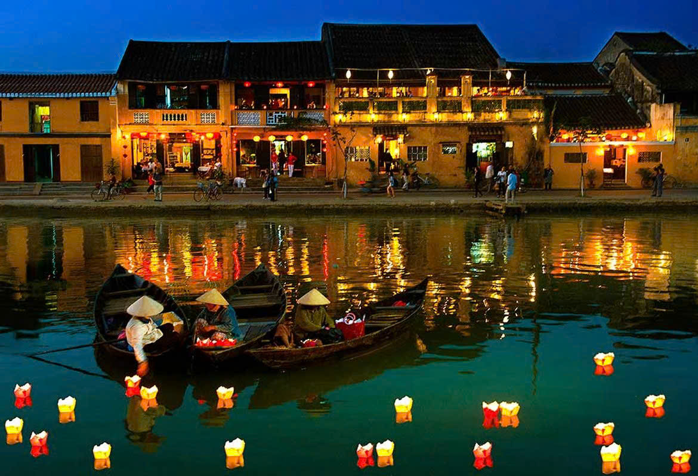
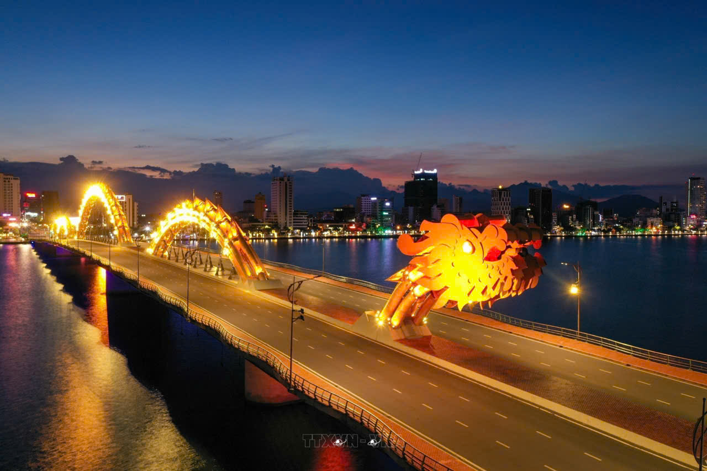
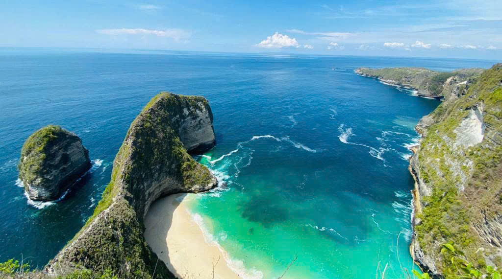

Khám phá Việt Nam và thế giới
Hành Trình Của Bạn
Bắt Đầu Ở Đây
Khám phá hơn 200 điểm đến tuyệt vời, trải nghiệm ngàn lẻ một hành trình và tạo nên những kỷ niệm không thể quên cùng GodTravel.
5,000+
Tour Du Lịch
200+
Điểm Đến
50,000+
Khách Hàng Hài Lòng
15+
Giải Thưởng Ngành
ĐIỂM ĐẾN
Điểm Đến Nổi Bật
Khám phá những điểm đến đẹp nhất Việt Nam và thế giới được cộng đồng du khách yêu thích nhất.
Vịnh Hạ Long
📍 Quảng Ninh, Việt Nam
Kỳ quan thiên nhiên thế giới với hàng nghìn hòn đảo đá vôi và hang động huyền bí.
Khám Phá →
Di sảnHội An
📍 Quảng Nam, Việt Nam
Phố cổ thơ mộng với những chiếc đèn lồng rực rỡ và kiến trúc cổ kính trải qua nhiều thế kỷ.
Khám Phá →Sa Pa
📍 Lào Cai, Việt Nam
Thị trấn vùng cao với ruộng bậc thang xanh mướt, sương mù huyền ảo và văn hóa dân tộc.
Khám Phá →
Biển đảoĐà Nẵng
📍 Đà Nẵng, Việt Nam
Thành phố năng động với bãi biển tuyệt đẹp, cầu Rồng độc đáo và ẩm thực phong phú.
Khám Phá →
Biển đảoPhú Quốc
📍 Kiên Giang, Việt Nam
Đảo ngọc với những bãi biển cát trắng, làn nước trong xanh và hoàng hôn tuyệt sắc.
Khám Phá → Quốc tế
Quốc tếBali, Indonesia
📍 Bali, Indonesia
Hòn đảo thần thoại với ruộng bậc thang, đền thờ Hindu và những bãi biển thơ mộng.
Khám Phá →Tour Hạ Long Bay 3N2D
Trải nghiệm vịnh Hạ Long trên du thuyền 5 sao với bữa ăn hải sản tươi ngon.
Sa Pa Trekking 4N3D
Chinh phục đỉnh Fansipan và khám phá văn hóa người H'Mông tại Sa Pa.
Tour Nhật Bản 6N5D
Khám phá xứ hoa anh đào với hành trình Tokyo – Kyoto – Osaka đầy trải nghiệm.

ƯU ĐÃI ĐẶC BIỆT
Đăng Ký Ngay, Nhận Ngay 15% Giảm Giá
Đăng ký thành viên ngay hôm nay để nhận 15% cho chuyến đi đầu tiên và nhiều ưu đãi độc quyền khác.
BLOG DU LỊCH
Cẩm Nang Khám Phá
Kinh nghiệm thực tế, mẹo tham quan và cảm hứng du lịch từ cộng đồng lữ khách.
 Kinh nghiệm
Kinh nghiệm15 tháng 3, 2025
10 Kinh Nghiệm Không Thể Bỏ Qua Khi Du Lịch Hạ Long
Vịnh Hạ Long không chỉ đẹp trong ảnh mà còn đẹp hơn nhiều khi bạn thực sự đặt chân đến...
Đọc Thêm → Review
Review12 tháng 3, 2025
Review Chi Tiết: Trekking Sa Pa 4 Ngày Cùng Người H'Mông
Chuyến trekking qua các bản làng người H'Mông ở Sa Pa là một trong những trải nghiệm đáng nhớ nhất...
Đọc Thêm →10 tháng 3, 2025
Bí Quyết Du Lịch Nhật Bản Mùa Hoa Anh Đào Tiết Kiệm Nhất
Đến Nhật Bản mùa anh đào không nhất thiết phải tốn nhiều tiền. Đây là những bí quyết giúp bạn...
Đọc Thêm →KHÁCH HÀNG NÓI GÌ
Họ Nói Gì Về Chúng Tôi
Hơn 50,000 khách hàng đã tin tưởng GodTravel cho những chuyến đi đáng nhớ của họ.
"Chuyến đi Hạ Long vô cùng tuyệt vời! Dịch vụ chuyên nghiệp, hướng dẫn viên nhiệt tình. Chắc chắn sẽ quay lại lần sau."
"Tour Nhật Bản mùa anh đào thực sự là trải nghiệm trong mơ. Mọi thứ được sắp xếp hoàn hảo từ khách sạn đến ẩm thực."
"GodTravel đã giúp gia đình tôi có một kỳ nghỉ Phú Quốc hoàn hảo. Trẻ em rất thích thú và bố mẹ thật sự được nghỉ ngơi."